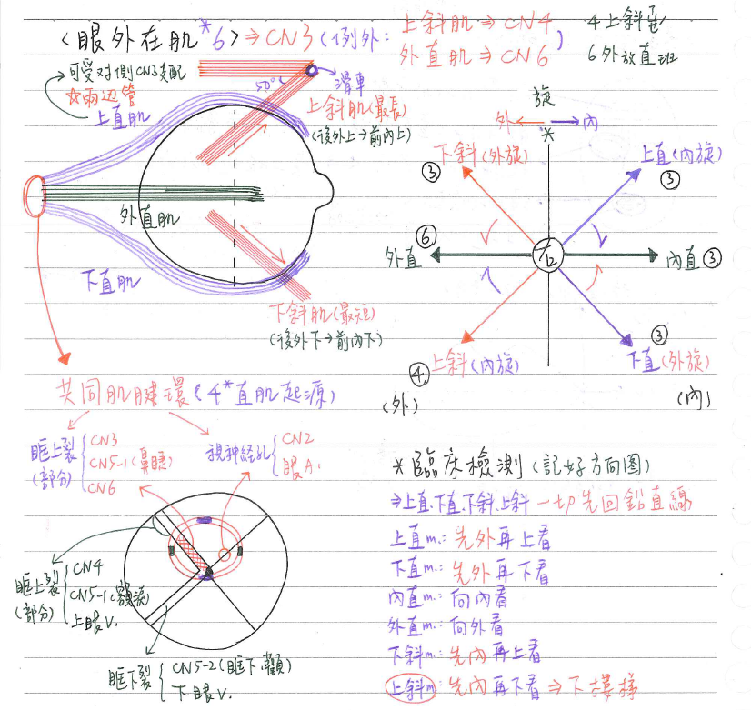
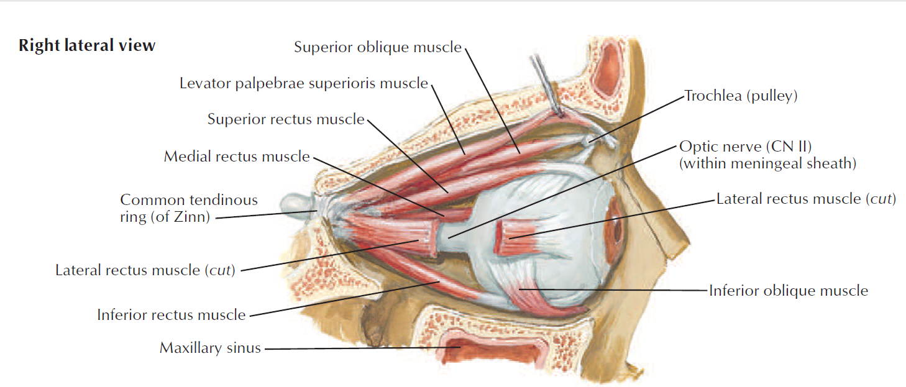
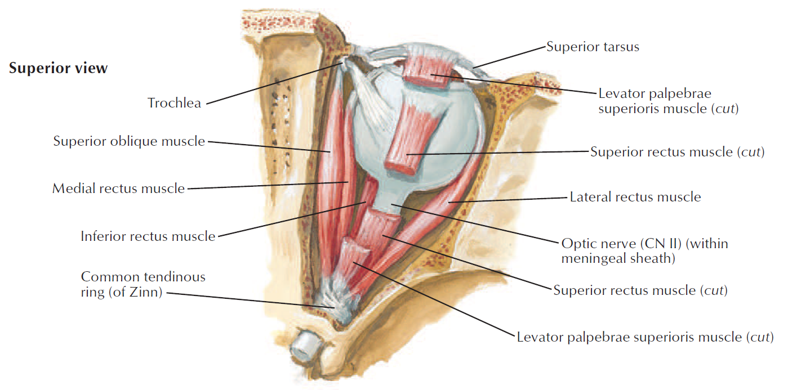
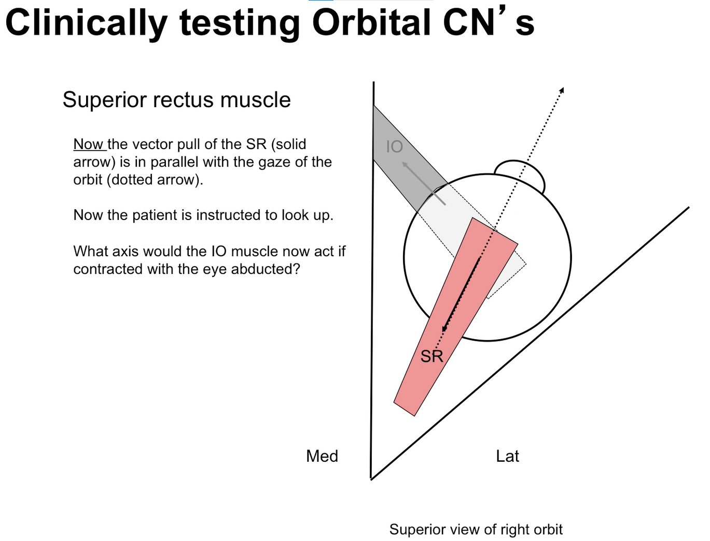
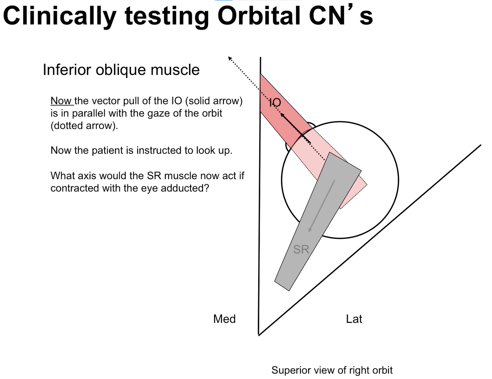

👁️ 肌肉系統：眼外在肌 [每年考，背圖才好解]
各肌肉詳情
| 肌肉 | 神經支配 | 解剖作用(anatomic action) | 起端 | 止端 | 備註 |
|---|---|---|---|---|---|
| 上直肌 | ★動眼N (CN3) | 向上、向內、★[110-1]向內旋 | 共同肌鍵環 | 眼球上方中央前部分 | 可接受★對側CN3支配 |
| 下直肌 | 動眼N (CN3) | 向下、向內、★[110-1]向外旋 | 共同肌鍵環 | 眼球下方中央 | |
| 內直肌 | ★動眼N (CN3) | 向內 | 共同肌鍵環 | 眼球內側 | |
| ★外直肌 | ★外旋N (CN6) | 向外 | 共同肌鍵環 | 眼球外側 | |
| 上斜肌 | ★★滑車N (CN4) | ★向下、向外、向★[110-1]內旋 | 共同肌腱環上方 眼眶後內側(蝶骨) | ★內直肌&外直肌間的眼球後半部 (眼球的後外上方) | 通過眼眶內側的滑車 最長的眼外在肌 |
| 下斜肌 | 動眼N (CN3) | 向上、向外、向★[110-1]外旋 | 眼眶前內側(上頷骨) | 下直肌&外直肌間的眼球後半部 | 最短的眼外在肌 起於眼眶前側而非後側！ |
特點整理
- 共軛運動(兩眼同時移向同一方)：看右方→右眼外直肌+左眼內直肌收縮
共同肌腱環common tendinous ring)：考N次
- 四條直肌的起點(上下內外直)
- 為外骨膜的加厚
- 跨越部分眶上裂
- ★內容物：視神經管(視N & 眼A )、動眼N(CN3)、外旋N(CN6)、鼻睫N (CN 5-1分支)
⇒包住CN3, 5-1, 6- ★沒包住同樣通過眶上裂的滑車N(CN4)、額N&淚N(CN 5-1分支)、上眼V)
臨床檢測：要先對準肌肉軸(肌肉施力的方向)
- ★上直肌：先向外看(使眼軸對準肌肉軸)，再向上看
- 下直肌：先向外看，再向下看
- 內直肌：向內看
- 外直肌：向外看
- [重點]★上斜肌：先向內看，再向下看(如下樓梯時)
- 下斜肌：先向內看，再向上看
- 參考影片(講得很清楚)：




為了分別鑑別每一條肌肉的狀況，必須要排除另一條肌肉的影響，最簡單的方式就是讓眼球瞳孔與要test的那條肌肉呈一直線(即趙神上課所講的：肌肉軸 跟 眼軸要對齊)，才能將另一條肌肉的影響降至最低
—>測試上直肌時，先將眼球向外轉(使眼軸跟肌肉收縮方向相同)，再向上轉

📖 書本補充：與筆記不同或筆記沒寫到的地方
⚠️
以下為對照書本後整理，筆記原文未更動。整體與筆記一致，以下多為補充。
眼球外在肌的運動（p.486）
- 書的表格多列了提上眼瞼肌：起於視神經管前方的蝶骨小翼，止於瞼板前方及上眼瞼皮膚，由動眼神經上支支配，提起上眼瞼。
- 四條直肌都起於總肌腱環；上斜肌起於視神經管上方和內側的蝶骨體；下斜肌起於眼眶底部的前部（111-2-5 解析：前內側壁，屬上頷骨）。
- 書的提示：
- 除了內直肌和外直肌，其餘眼外肌都有旋轉眼球的功能（110-1-4 就考這點）。
- 四條直肌附著在眼球前半部；兩條斜肌附著在眼球後半部。
- 上斜肌的走法：穿過滑車後轉向，從上直肌下面經過，附著在眼球上方的外後方。
動眼、滑車、外旋神經（p.481）
- 動眼神經分上、下兩支：
- 上支：提上眼瞼肌、上直肌
- 下支：下直肌、下斜肌、內直肌，另帶副交感纖維到睫狀神經節（→睫狀肌、瞳孔括約肌）
- 記憶法：上支管名字裡有「上」的肌肉。
- 神經出腦幹的位置：動眼＝兩大腦腳之間（腳間窩）；滑車＝下丘的尾端；外旋＝橋腦與延腦之間。
- 滑車神經是唯一從腦幹背面發出、且纖維會交叉到對側的腦神經（104-1-4、106-2-16、111-1-1 三題都考這點）。
- 動眼神經完全麻痺時：外直肌（CN VI）和上斜肌（CN IV）還在作用，所以瞳孔偏向外下方（110-2-16）。
總肌腱環（p.513）
- 書寫的內容物與筆記一致：視神經、眼動脈、動眼神經上下支、鼻睫神經（V1）、外旋神經。
- 書補一句：V1 的分支中只有鼻睫神經穿過總肌腱環（額N、淚N在環外，108-2-2 解析）。
📝 書中歷屆考題（點選答案作答）
103-1-10p.486
病患的左眼可以看向左方但無法同時上抬，下列何者最可能損傷？
💡 左眼能看向左（外直肌、CN VI 正常），向外看時負責上抬的是上直肌（CN III）。
108-1-4p.487
兩眼同時看向正上方，為何種神經之作用？
💡 看正上方主要靠上直肌，由動眼神經支配。
110-1-4p.487
下列何者的收縮，與眼球的旋轉 (rotation) 無關？
💡 內直肌只會讓眼球往內側運動。
110-2-16p.487
若動眼神經完全麻痺 (complete oculomotor nerve palsy)，但滑車神經 (trochlear nerve) 及外旋神經 (abducent nerve) 並未受損，則病患受影響的眼球瞳孔會朝向？
💡 外直肌正常→往外；上斜肌正常→往下；兩者相加＝外下方。
111-2-5p.487
下列關於眼外肌中的下斜肌 (inferior oblique) 的描述，何者錯誤？
💡 下斜肌起自眼眶前內側壁（上頷骨），附著在眼球下後方，讓瞳孔朝上外側看。
104-1-4p.482
下列何者由腦幹神經核發出後會交叉到對側？
106-2-16p.482
下列何者由腦幹 (brainstem) 背側發出？
111-1-1p.482
下列那一對腦幹神經核，其神經元發出神經纖維後先在腦幹內交叉到對側才離開腦幹？
💡 滑車神經核的纖維從腦幹背面、下丘下方離開。
104-2-4p.484
下列何者不是動眼神經損傷之典型臨床症狀？
💡 動眼神經受損會連帶傷到讓瞳孔縮小的副交感纖維，交感相對增強→瞳孔放大。
105-2-7p.484
手術時，不慎切斷動眼神經 (oculomotor n.) 主幹，下列何種情形最不可能產生？
💡 管淚液分泌的纖維走在岩大神經（顏面神經分支）內。
101-1-25p.485
下列有關顱神經 (cranial nerve) 的敘述，何者正確？
💡 第一咽弓＝三叉N；滑車神經來自對側神經核、在下丘後方出中腦；提上眼瞼肌是動眼神經上支。
108-2-14p.485
下列何者出現在腦幹的 interpeduncular fossa 中？
💡 腳間窩在兩個大腦腳之間，CN III 由此鑽出。
108-2-2p.514
①額神經 (frontal nerve) ②鼻睫神經 (nasociliary nerve) ③動眼神經 (oculomotor nerve) ④淚神經 (lacrimal nerve) ⑤滑車神經 (trochlear nerve) ⑥外旋神經 (abducent nerve) 等六條神經中，那些不經由總腱環 (common tendinous ring) 內進出眼眶？
💡 V1 的分支中只有鼻睫神經穿過總肌腱環。
112-2-10p.514
下列何者不會出現在眼窩的共同腱環 (common tendinous ring) 內？